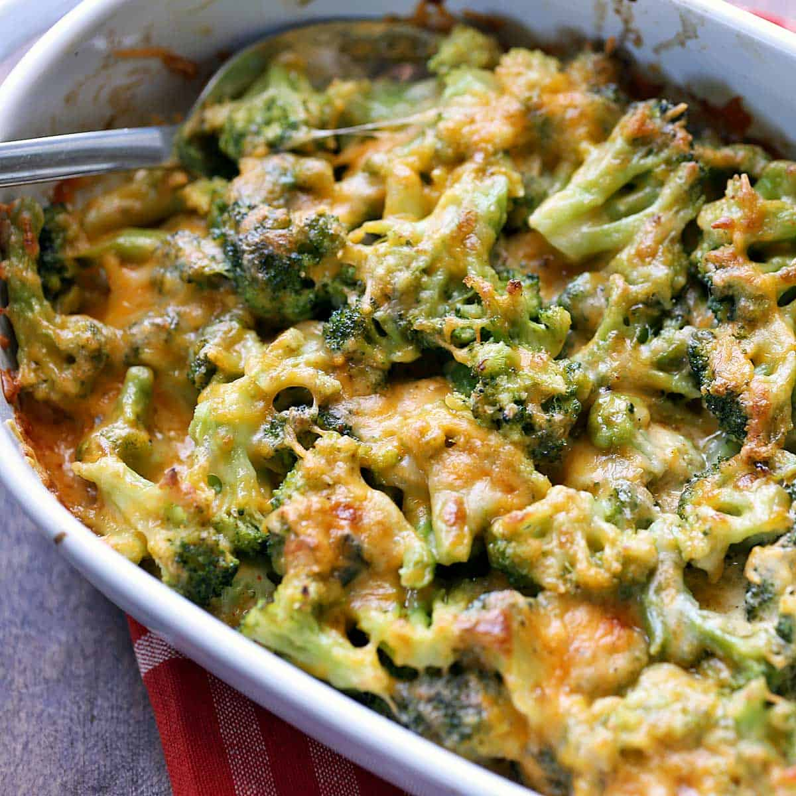

Awesome Broccoli-Cheese Casserole
Description
An example of a dish that looks amazingly delightdull for my taste, and i decided to give it a try myself,
and for your own good share it here, on my project, with you. Credits to AllRecipes.com. Let us enjoy this beauty!
Ingredients
- 1 can condensed cream of mushroom soup
- 1 cup mayonnaise
- 1 egg, beaten
- 1/4 cup chopped onion
- 3 packages frozen chopped broccoli
- 8 ounces shredded sharp Cheddar cheese
- salt and pepper to taste
- 1 dash paprika
Steps
- Preheat the oven to 175 degrees C. Butter a 9x13-inch baking dish.
- Whisk condensed soup, mayonnaise, egg, and onions together in a medium
mixing bowl until combined.
- Place frozen broccoli into a very large mixing bowl and break it up
if necessary;
add soup mixture and mix well to coat. Sprinkle with cheese and mix well;
spread mixture into the prepared baking dish. Season with salt, pepper,
and paprika.
- Bake in the preheated oven for 45 minutes to 1 hour.